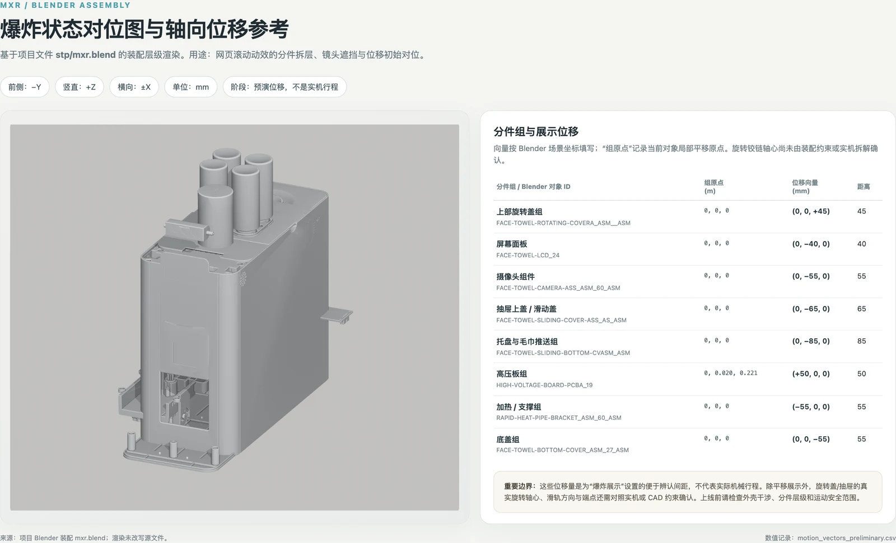

01 先看见，再贴近
肌肤的状态，
值得被认真对待。
棉小柔把 AI 肤质识别融入用巾护理的起点，让选择不再只是凭感觉。了解界面流程，再进入每天的柔软时刻。
以下画面为项目提供的 UI 设计稿演示。屏幕中的数值、结果与建议尚未作为经验证的产品承诺；公开使用前需由品牌与产品团队确认。
继续了解产品结构02 结构，正在展开
让一台设备，
看得见它的用心。
从外观轮廓到内部层级，以产品模型呈现棉小柔智能肤质毛巾机的结构关系。滚动时，镜头靠近，分件逐步展开。
CAD 分件与位移为网页视觉预演；盖板轴心、抽屉行程及内部装配关系未经工程验证，不代表实机动作或操作方式。
结构展示 · 预演状态
01 — 04PRESS · WATER · OPEN · SOFT
04 回到每天的清晨
把贴心，放进
日常用巾的每一步。
在梳妆台前停一停：先了解肌肤状态，再取用准备好的毛巾。智能设备不必抢走生活的主角，只让熟悉的护理，多一份从容。
